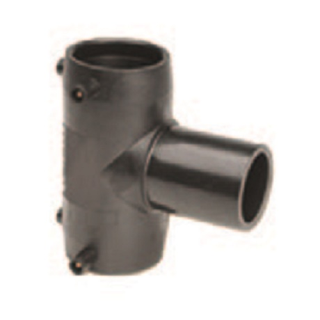

Тройник KPS 63 мм сварной токопроводящий
Артикул: 0598
KPS Petrol Pipe System
Раздел: Пластиковый трубопровод для АЗС · АЗС
| Диаметр условного прохода DN (ДУ) | 50 |
Цена и наличие — по запросу. Поставляем оригинал и аналоги. Доставка по России.
Описание
Тройник KPS 63 мм сварной токопроводящий производства KPS Petrol Pipe System — позиция из раздела «Пластиковый трубопровод для АЗС» для АЗС. Компания SYNDICAT поставляет оборудование и комплектующие для автозаправочных и газозаправочных станций по всей России. Цена и наличие «Тройник KPS 63 мм сварной токопроводящий» — по запросу: оставьте заявку или позвоните, подберём оригинал или аналог и рассчитаем доставку.